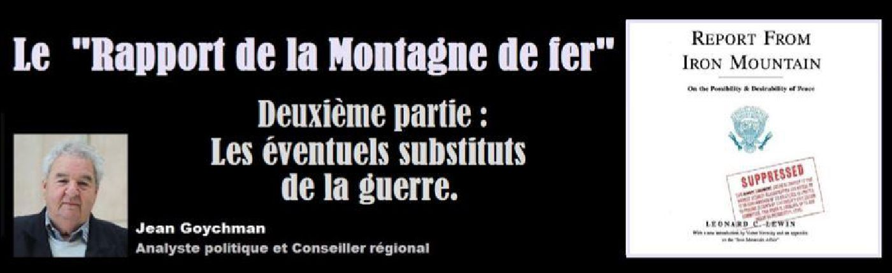
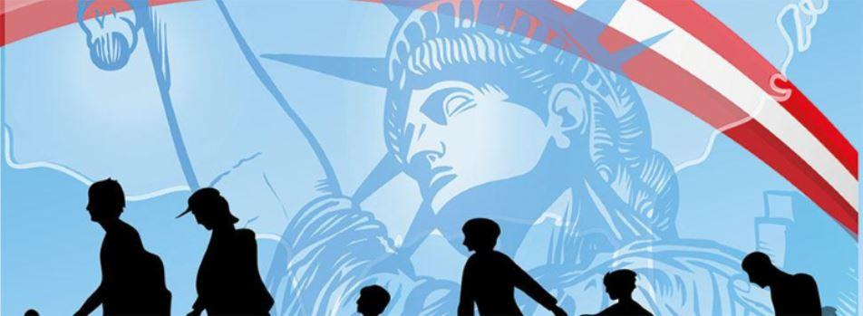

Le « Rapport de la Montagne de fer ». Deuxième partie : Les éventuels substituts de la guerre
par Jean GOYCHMAN

Après avoir passé en revue les différentes fonctions réalisées par la guerre, le groupe des participants décida logiquement de s'attaquer à l'étude des palliatifs, c'est à dire des éventuels substituts qui pourraient, autant que faire se peut, jouer le rôle de la guerre en remplissant les mêmes fonctions.
Une réflexion préalable s'impose. Pour qu'un plan de transition du monde actuel, centré sur l'état de guerre, vers un monde en paix soit étudié, encore faut-il qu'il puisse répondre aux réels besoins jusqu'alors satisfaits par les fonctions « non militaires » de la guerre. Dans le cas contraire, l'exercice restera purement théorique.
Il faut noter, à ce stade, qu'il n'est pas certain que ce problème puisse se résoudre. Ces substituts doivent paraître avant tout réalistes et réalisables, du moins très rapidement.
Le rapport passe en revue les critères auxquels les différents types de substituts envisageables doivent répondre pour chaque fonction « non militaire » de la guerre en suivant l'ordre de classement de la partie précédente.
Économie : Dans ce domaine d'importance primordiale, deux critères apparaissent essentiels pour les substituts : Ils doivent entraîner un gaspillage (dépenses inutiles) et doivent se situer hors du domaine du « marché » pour ne pas subir « l'offre et la demande ». Nos sociétés avancées (d'après les auteurs) doivent détruire au minimum 10% de leur produit national brut. Une étude montre que, notamment aux États Unis, les grandes crises économiques surviennent lorsque les dépenses militaires sont insuffisantes. C'est d'ailleurs dans cet esprit qu'un certain nombre de programmes dits « de reconversion » envisagent d'affecter des budgets importants aux affaires sociales. On peut en détailler certains, dans des domaines différents :
1) Santé publique : Accroissement des sommes consacrées à la recherche médicale, construction d'établissements hospitaliers, garanties étendues de soins pour l'ensemble de la population.
2) Éducation : financer des programmes éducatifs ambitieux destinés à l'ensemble de la population, passant par la formation des maîtres et viser pour tous un accès à des études « diplomantes »
3) Logement : Attribuer un logement décent à tous, correspondant à un niveau auquel seuls 15 % des américains peuvent bénéficier
4) Transports : Création de systèmes de transports publics de masse permettant à chacun de voyager dans de bonnes conditions, tant pour son travail que ses loisirs.
5) Milieu physique : Développements de toutes les ressources naturelles et lutte contre la pollution sous toutes ses formes... (rappelons que le rapport date de 1967)
6) Pauvreté : Éliminer efficacement la pauvreté, notamment en assurant un revenu annuel garanti pour chacun...
Dans l'esprit des rédacteurs, il s'agit de mentionner les points les plus importants de la future dépense sociale. Ils ont conscience que cela puisse paraître « dispendieux » mais nourrissent surtout la crainte inverse, c'est à dire qu'elle ne puisse pas compenser complètement la disparition des budgets militaires. Ils soulignent que, jusqu'à présent, ces postes budgétaires étaient élaborés à l'intérieur d'une économie générale de guerre et non pour les remplacer dans une économie de paix.

Politique : Le système basé sur la guerre est un facteur de stabilité des gouvernements dans la mesure où la nécessite d'une autorité de commandement s'impose. Il favorise également l'existence et la cohésion de la nation. Les substituts à la guerre dans ce domaine doivent tenir compte de cet aspect des choses. Il est possible qu'une ère de paix prolongée à la surface de la planète implique la disparition des souverainetés nationales, ce qui impliquerait également la disparition des nations, du moins sous leur forme actuelle, sans toutefois détruire ce qu'il est convenu d'appeler les « États »
Plusieurs hypothèses ont été émises sur la nature des relations entre États qui s'en suivraient en cas de désarmement total. Toutes évoquent des solutions d'ordre juridiques, basées sur des institutions internationales destinées à arbitrer les éventuels désaccords. Cependant, il est nécessaire que ces futurs États puissent avoir une forme d'organisation politique de façon à organiser leur société interne.
Le rapport envisage la création d'une sorte de « police internationale » chargée de faire régner l'ordre et agissant sous le couvert d'un tribunal international. On reviendrait alors à une forme d'action « militaire », même si celle-ci ne s'exerce que sous forme de menaces.
Sociologie : La guerre remplit deux fonctions socialement importantes. Dans un monde de paix, la société ne peut demeurer stable que si on trouve un substitut à la fois capable de détecter et neutraliser les éléments « perturbateurs » et en même temps de préserver et de maintenir la cohésion de cette société. Il est essentiel de garder le contrôle des populations et de canaliser voire de neutraliser les pulsations individuelles qui pourraient créer un ferment de discorde. Le secrétaire d'État McNamara avait envisagé, afin d'éviter ce danger, de créer un « corps de la paix » destiné à se substituer à cette fonction sociologique de la guerre. Un autre substitut envisageable serait une sorte de retour à l'esclavage. Seuls les romans d'Orwell, Huxley ou Wells y font jusqu'à présent référence. Mais, au fil du temps, l'anticipation de romans tels que « le meilleur des mondes » paraît de plus en plus crédible... D'autant plus que, malgré une incompatibilité évidente avec les valeurs morales et économiques de l'Occident, une forme plus subtile de l'esclavage soit rendue nécessaire pour établir un monde de paix. Par euphémisme, le terme « esclavage » disparaîtrait, mais on pourrait créer une forme analogue de dépendance par produits chimiques ou de stimulation psychique qui conduirait au même résultat.
Cependant, cette fonction sociologique de la guerre exige également de fournir à la société un ennemi qui représente une menace réelle pouvant mettre en péril l'existence même de cette société. Pour être crédible, une telle menace peut conduire la société menacée à accepter de payer « le prix du sang » De ce strict point de vue, les substituts proposés sont insuffisants.
Le rapport précise même que : « les modèles fictifs doivent présenter une force de conviction extraordinaire à laquelle doit s'ajouter une possibilité notable de sacrifices de vies humaines ; la construction d'une structure mythologique ou religieuse, à la page, présenterait, à notre époque, des difficultés mais mérite qu'on y réfléchisse »
Écologie : Si on considère que les pertes en vies liées à cette fonction de la guerre reviennent à faire une sorte de contrôle « sélectif » de la population, il paraît assez simple de trouver des substituts. Le seul problème est de savoir à quel rythme la transition doit se faire. Cette fonction de la guerre est eugéniste « à l'envers » et n'a jamais été un facteur de progrès génétique.
Par contre, s'il s'agit du « contrôle brut » de la population, les derniers conflits mondiaux ont montré leur « efficacité » avec les armes dites « de destruction massive » De ce point de vue, seul le fait le limiter les naissances par l'insémination artificielle serait le meilleur substitut. Un tel système posséderait également l'avantage d'être facilement « eugénique » par des actions génétiques. On comprend que, dans ce cas, l'efficacité de la guerre serait nettement surpassée. Le véritable problème que poserait l'emploi de ce substitut serait d'ordre politique. Il paraît évident qu'il ne peut y avoir simultanéité de ce système proposé avec la guerre, car la surpopulation est assimilable à un « matériel de guerre » et que chaque État ou nation veillera à maintenir une population aussi nombreuse que possible.
Ce dilemme est sans solution apparente, mais il serait souhaitable que la décision d'emploi de ce substitut soit prise plus tôt que plus tard.
Culture et sciences : Les arts dits « de création », issus de l'imagination ou de l'interprétation de l'artiste, n'ont, à priori, aucune raison de disparaître dans un monde sans guerre. Toutefois, il est incontestable que la guerre a fourni une source très importante de sujets dans les domaines culturels et artistiques. Il est parfaitement envisageable, dans un monde de paix, de continuer à évoquer les guerres ou les faits de guerre en tant que « mémoire » de l'humanité. Les vertus que la guerre mettait en valeur continueront d'exister, ne serait-ce que d'un point de vue subjectif. Il est même possible que les arts retrouvent le rôle qu'ils jouaient dans les sociétés primitives, dont on sait qu'elles étaient orientées vers la paix. Cette fonction, purement esthétique ou ludique peut s’accommoder d'un art sans contenu, sorte de prélude à une société sans guerre. On constate déjà l'importance de certaines expériences destinées à promouvoir l'idée que « la forme technologique d'une expression culturelle prime sur son contenu »
Concernant le développement scientifique, le rapport évoque la recherche et la conquête spatiale comme étant le substitut le plus efficace. Cela pourrait servir de « stimulant » à l'ensemble de la recherche scientifique. Il ne fait aucun doute, dans l'esprit des auteurs, qu'elle pourrait faire vivre toutes les activités technologiques qu'un budget de recherche spatiale militaire exigerait.
Un projet de réformes sociales d'une ampleur inégalée pourrait également fournir une impulsion à la recherche médicale et à la psychologie éducative. Même dans l'hypothèse où on ne tiendrait pas compte de ces substituts partiels, les perspectives de développements technologiques des impulsions données par les guerres du 20ème siècle et l'éventualité d'une 3ème guerre mondiale devraient se poursuivre durant quelques décennies encore.
Partager cette page